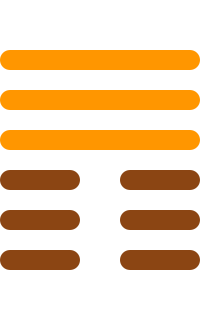

第十二卦
否卦

卦辞
否之匪人，不利君子贞，大往小来。
否卦象征着闭塞、不通与困难。卦辞意为：否塞的不是人，不利于君子坚守正道，大的去，小的来。否卦告诉我们，阴阳不交，天地闭塞，万物不顺，是困难时期的象征。
彖传
否之匪人，不利君子贞，大往小来。则是天地不交而万物不通也，上下不交而天下无邦也。内阴而外阳，内柔而外刚，内小人而外君子，小人道长，君子道消也。
彖传说：否塞的不是人，不利于君子坚守正道，大的去，小的来。这是天地不交而万物不通，上下不交而天下没有邦国。内阴而外阳，内柔而外刚，内小人而外君子，小人之道增长，君子之道消减。
象传
天地不交，否。君子以俭德辟难，不可荣以禄。
象传说：天地不交，就是否卦。君子应当效法这种精神，节俭德行避开灾难，不可以因荣耀而获得俸禄。天地阴阳不交，君子要修养德行，避免灾难。
爻辞
初六：拔茅茹，以其汇，贞吉，亨
拔茅草连根拔起，连同同类，坚守正道吉祥，亨通。
初六爻位于最下方，象征团结。如同拔茅草连带同类，团结一致坚守正道，这样就会吉祥亨通。
六二：包承，小人吉，大人否，亨
包容承受，小人吉祥，大人闭塞，亨通。
六二爻得中得正，能够包容承受。小人在这种情况下可能吉祥，但大人宁愿保持闭塞，这样反而亨通。
六三：包羞
包容羞耻。
六三爻位置不当，需要包容羞耻。在困难时期，可能需要忍受屈辱，保持忍耐，等待时机。
九四：有命无咎，畴离祉
有天命没有灾害，同类得到福泽。
九四爻接近君位，得到天命。能够得到上天的眷顾，没有灾害，同类也会因此获得福泽。
九五：休否，大人吉。其亡其亡，系于苞桑
停止闭塞，大人吉祥。将要灭亡将要灭亡，系于苞桑。
九五爻居中尊位，能够停止闭塞。大人能够扭转局面是吉祥的。但要保持警惕，如同系于苞桑一样需要谨慎。
上九：倾否，先否后喜
倾覆闭塞，先闭塞后喜悦。
上九爻位于极点，否极泰来。闭塞的局面被倾覆，虽然开始困难，但最终会带来喜悦。